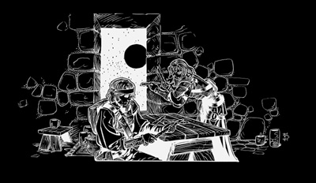

七节权杖(The Rod of Seven Parts)
在太古时代由艾夸的风公爵(Wind Dukes of Aaqa)，一个强大的守序生物所造，用于对抗浑沌之后(Queen of Chaos)的战役，后来于一场发生于佩墟(Pesh)的毁灭性战争中被拆开。它的七个部分散落在各个世界与位面，但每一部仍保有一些完整权杖曾具有的强大魔法。
完整的七节权杖长5�眨�底部宽2�迹�至杖顶时宽约半�肌Ｗ魑�一个秩序性的神器，分节处完全没有破损。分节处是精细复杂的结晶型排列，包含了突出与凹陷。个别的杖节分别长4、5、6、8、10、12和15�肌�
每个杖节都具有藉由命令语激活的次级法术型能力。这些能力的施法者等级为20级；豁免检定难度等级为17 + 法术等级。4�汲さ恼榷ッ刻炜墒┱刮宕巍敝瘟魄嵘恕�(cure light wounds)。5�汲さ恼冉诿刻炜芍圃煲淮巍被郝�术”(slow)的效果。6�汲さ恼冉诿刻炜墒┱挂淮巍奔铀偈酢�(haste)。8�汲さ恼冉诿刻炜梢允┱刮宕巍痹旆缡酢�(gust of wind)。10�汲さ恼冉诿刻炜商峁┮淮巍闭媸的抗狻�(true seeing)。12�汲さ恼冉诿刻炜墒┱挂淮巍惫治锒ㄉ硎酢�(hold monster)。15�汲さ恼冉诿刻炜墒┱挂淮巍币搅剖酢�(heal)。
任何接触任一杖节的非守序阵营角色每周必须进行一次难度等级17的意志检定以避免转变为守序阵营。持有某一杖节的的守序阵营角色若将其视为某个较大物体的一部份，在进行难度等级20的专注检定后，便可以得知下一个较大杖节的方向，效果如同”物品定位术”(locate object)，但没有范围限制，也不会被铅所阻挡。此功能不可用于寻找比持有之杖节长度更小的杖节。
权杖的杖节可以进行连接以产生具有强大力量的神器 －接得越多，力量越强。连接两个杖节可以让持有者以命令语任意激活”飞行术”(fly)。三个杖节可以让持有者得到15点的法术抗力，使用时视为 +1 轻型硬头锤。四个杖节可每天施展两次’’操控风相”(control winds)(以命令语激活)，使用时视为 +2 重型硬头锤。五个杖节可以让持有者每天施展一次”形体变化”(shapechange)，使用时视为 +3/+3 木棍。六个杖节可让持有者每天施展一次” 御风而行”(wind walk)，使用时视为 +4/+4 木棍。角色若持有包含六个或七个已连接的杖节作为武器时，便视为拥有左右开弓(Ambidexterity)及双武器攻击(Two-Weapon Fighting)专长，以协助角色将权杖做为双头武器使用。若角色以其它武器进行攻击时并不可得益于此功能。
若角色试图以错误的方式连接杖身(例如试图将6�汲さ恼冉诹�接到10�汲さ恼冉�)，则较大的杖节会向随机方向传送至距离1d10 × 100哩的地点。由于权杖的结构非常精确，因此很容易区分哪些是相接的，哪些则否。
若七个杖节完整地连接在一起，它会得到许多额外的能力。持有完整权杖者每天可施展”操控天气”(control weather)、”旋风术”(whirlwind)和”高等复原术”(greater restoration)各一次。权杖视为 +5/+5 木棍，两端都具有针对混乱异界生物的破敌能力与守序能力。最后，七节权杖的持有者可以用它来施展”完全复生术”(true resurrection)，但使用此能力会导致权杖再次解体，散落于各个世界与位面。